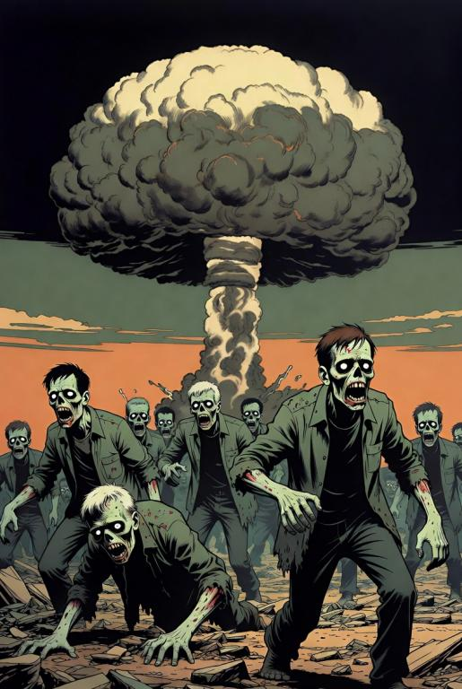

I have told anyone who will listen to me, that come the end of the world, I want to die in the first few milliseconds, (preferably after sex and a good pizza), and not live for the rest of my life eating rats, dressed in rags, and waiting to become some bitch for whichever biker boss ends up ruling the wasteland.
Prepers to me just don’t see the end game, a storeroom full of tinned SPAM and tuna, and a bunch of weapons is not going to restart society, it just means you will live longer in misery, expecting every stranger to be an enemy, and of course make you the next target for said biker boss. Even if you go the billionaire route and have your super high-tech bunker getaway in the South Island of New Zealand with its lifetime guaranteed power supply, food, concubines, and offline entertainment, you’re still just postponing the inevitable. Ten years down the line when lifetime-guaranteed crucial system inevitable fails, and the spare part is a hundred-years of technological progress away, you will be in the same boat.

Likewise, I have always avoided the ‘end of the world’ dystopian genre in books, shows, and movies; You know the ones, those where a bunch of misfit survivors struggle, almost always unsuccessfully, to keep alive, doing it in the most miserable and unlikable ways imaginable, and carrying on the same tired plot line into the next show/chapter/series. You just know that is all there is going to be; it’s a plot line with a complexity one above porn!
If dystopia is going to be part of the plot, I want the rest of the plot to show human problem solving and ingenuity at its best, and the survivors to be in a much better position than they started from, otherwise what really is the point!
Of course I grew up on shows like Star Trek, Mission Impossible, Thunderbird’s, and the likes, generally optimistic shows that put humans in impossible situations and let them solve them using their superior skills, technology and intelligence, usually leading to a satisfactory ending where something was achieved. Likewise movies, there were always goodies and baddies and the baddies generally got their comeuppance at the end, usually with a witty quip from the protagonist. Even with books, the most gritty novel generally had an upbeat ending, with mankind triumphing against the alien invaders or fixing the world-ending problem; Even if the plots are rubbish, I don’t come away from them feeling depressed.
Today, even supposedly utopian shows like Star Trek have gotten miserable to the point of unwatchable, where the only challenges are the various ‘feelings’ each character has and the problem solving is the same tired one repeated from a hundred other episodes. I like my hero’s intelligent, and not to do stupid or clinically certifiable dumb moves, which they then get out of using equally stupid, unlikely, or downright impossible means. A good example of one of these certifiably dumb moves is where the protagonist confronts the antagonist, both have guns, but the antagonist is holding a hostage with his gun pointed at her head (yes it is always a man holding a woman) and he asks the protagonist to drop their weapon or he will kill her. The protagonist then drops his weapon! It beggars belief that this would ever be done in reality by anyone with an ounce of sense, yet almost every time it is done, and the good guys somehow survive – Oh yes, did I forget, the bad guy has got to be just as stupid as the good guy!
“The struggle” will forever be a genre, but come on guys, make the outcome at least optimistic!